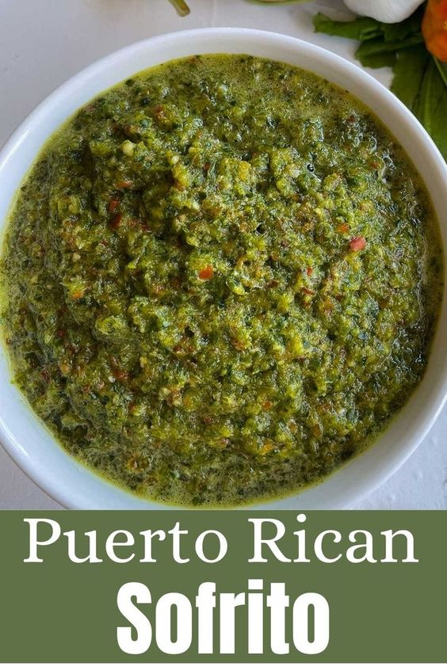

Home
Sofrito

What is sofrito?
Sofrito is a flavor base made of aromatic vegetables to deepen the flavor of the food.
It is used all over the Caribbean with different variations per country. A classic authentic
Puerto Rican sofrito is made with blended raw onions, garlic, peppers, aji dulces, cilantro,
and most important culantro. Very similar to the sofrito from the Dominican Republic.
Ingredients:
- 1 bunch recao
- 1 bunch cilantro
- 1 cup aji dulce about 15-20 ajices
- 1 red bell pepper
- 1 onion
- 2 cubanelle pepper
- 12 cloves garlic peeled
- 1/2 cup water
Steps
- Wash all your ingredients and roughly chop.
- Add your ingredients to a blender or food processor and mix.
If big enough you can add them all together or you can do it in batches.
- Mix well until everything is well incorporated but your mix still has some texture.
- Store accordingly.